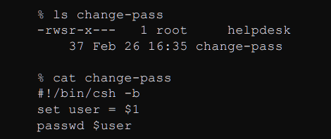
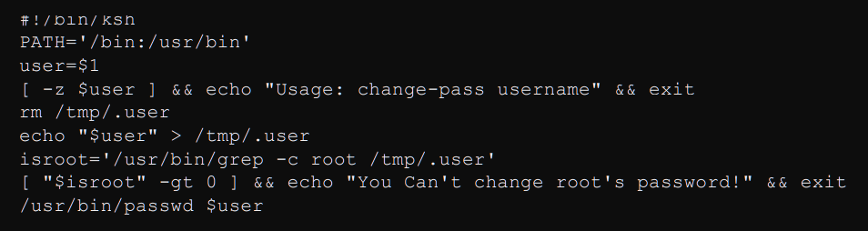
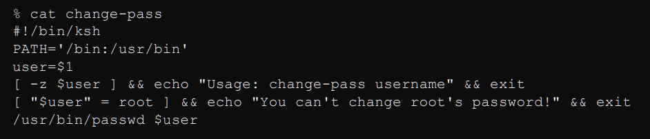
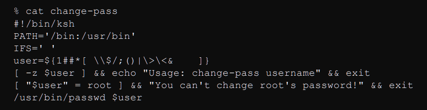

Normally, UNIX scripts and programs run with the same permissions as the user who executes them. This is why typical users can't change their passwords by editing the /etc/passwd file; they don't have the permission to w rite to /etc/passwd, and no command they run will either. SUID programs, however, override normal permissions and always run with the permissions of the program's owner. Therefore, users can use the /usr/bin /passwd command to change their passwords. The /usr/bin/passwd command is SUID and is owned by root. It always runs with the same permissions as root.
The problems is that a lot of new users and sysadmins use SUID programs as a silver bullet to solve all of their problems and end up using it in an insecure way.
Take a look at this following little script.
This script is made for helpdesk employees, so that they can change someones password easily. It is however trivially easy to get a root shell with this. The script uses C-shell, which is vulnerable to environment variable manipulation. By issuing the env TERM='`cp /bin/sh /tmp/sh;chown root /tmp/sh;chmod 4755/tmp/sh`' change-pass command, you're greeted with a root shell.
I'm gonna use this script to demonstrate different ways of explpoiting a SUID program.
If we would've used a different shell, the problem would be solved, but it's not safe yet. Unix systems sarch for executables in the paths found in the PATH environment variable. By setting PATH to a different value, and putting a binary with the same name as passwd we can run our own little script once the SUID script is ran.
Set the environment variable at the beginning of the script, so that this doesn't happen.
The script works in a weird way, it actually lets you change the root password ... This is very important. A program might not have a an actual vulnerability, it might simply be made in a weird way. Never forget about non intended effects. Always understand and look up how a program works. Even if we make it more secure by checking the provided user name, if no argument is specified the passwd command is called without one and defaults to the root user, allowing us to change it's password once again.
The script is now pretty secure but here's a thing. It writes the username into a temporary file. The file's contents could be changed by the time the script checks its contents. Stop messing around with temporary files or at least place them in a location that isn't publicly readable.
There are more tricks up my sleeve. The argument and environment is pretty secure at this point. But we can still explpoit a command injection vulnerability. By calling the program with the % change-pass "user;cp /bin/sh /tmp/sh;chown root /tmp/sh;chmod 4755 /tmp/sh" command, we call the change-pass script with the user argument and inject a root shell calling sequence right after it.
NEVER TRUST USER INPUT! It is very important to always filter out input. Don't reinvent the wheel, look for someone who made a working filter and use his solution.
The shell has a so called Internal Field Separator. The IFS specifies which characters separate commands. If we set the IFS to an empty space character, the command suddenly turns from /usr/bin/passwd to usr bin passwd And by creating a script called usr, the SUID scriptt will run it and open up a root shell.
It's a good idea to set the IFS manually as well.
Unfortunately, we are still not safe. There is an inherent race condition in shell scripts that we can't fix with better programming. The problem is that running a shell script is a two-step process. First, the system starts up a new shell. Then, the new shell reads the contents of the script and executes it. By timing things perfectly, a hacker can exploit the delay between shell startup and when the script is read and executed. By creating a link to the SUID script it is possible to run anything as root.
I relied heavily on this document to create this post. All credits go to it's creator, thank you! :)